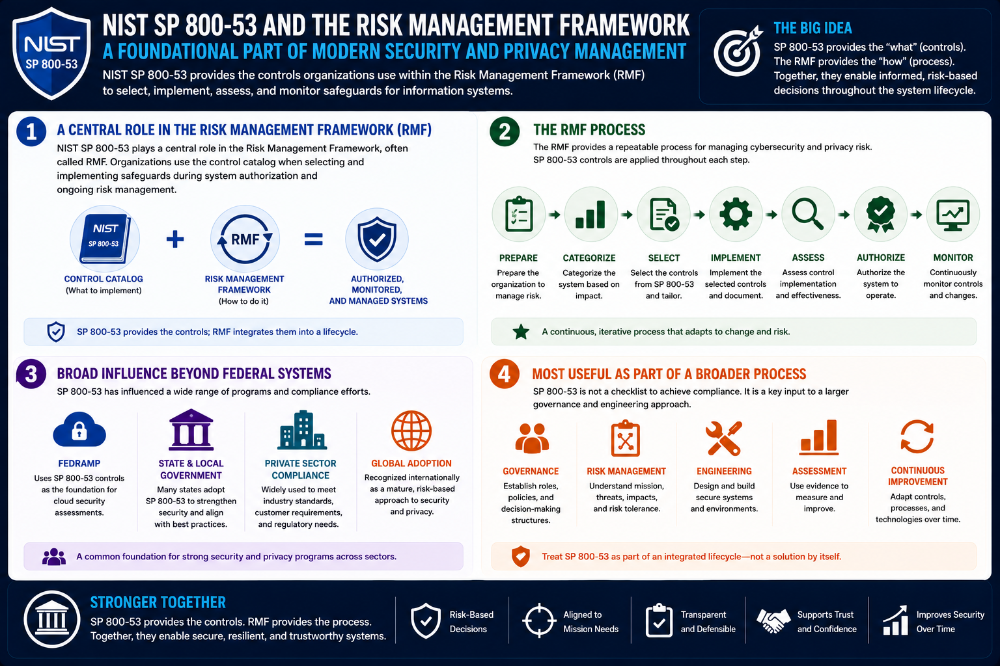

What Is NIST SP 800-53?
Relationship to RMF and Compliance Programs
Connecting to LMS... Progress: in progress
Version 1.0 | Date: 2026-06-16 | Introductory overview of NIST SP 800-53 security and privacy controls.

Narration
NIST SP 800-53 plays a central role in the Risk Management Framework, often called RMF. Organizations use the control catalog when selecting and implementing safeguards during system authorization and ongoing risk management.
The RMF provides a process for preparing, categorizing systems, selecting controls, implementing controls, assessing controls, authorizing systems, and monitoring controls over time.
SP 800-53 has also influenced programs such as FedRAMP, state government security initiatives, and many private-sector compliance efforts.
The publication is most useful when treated as part of a broader governance and engineering process, not as a document that solves compliance by itself.